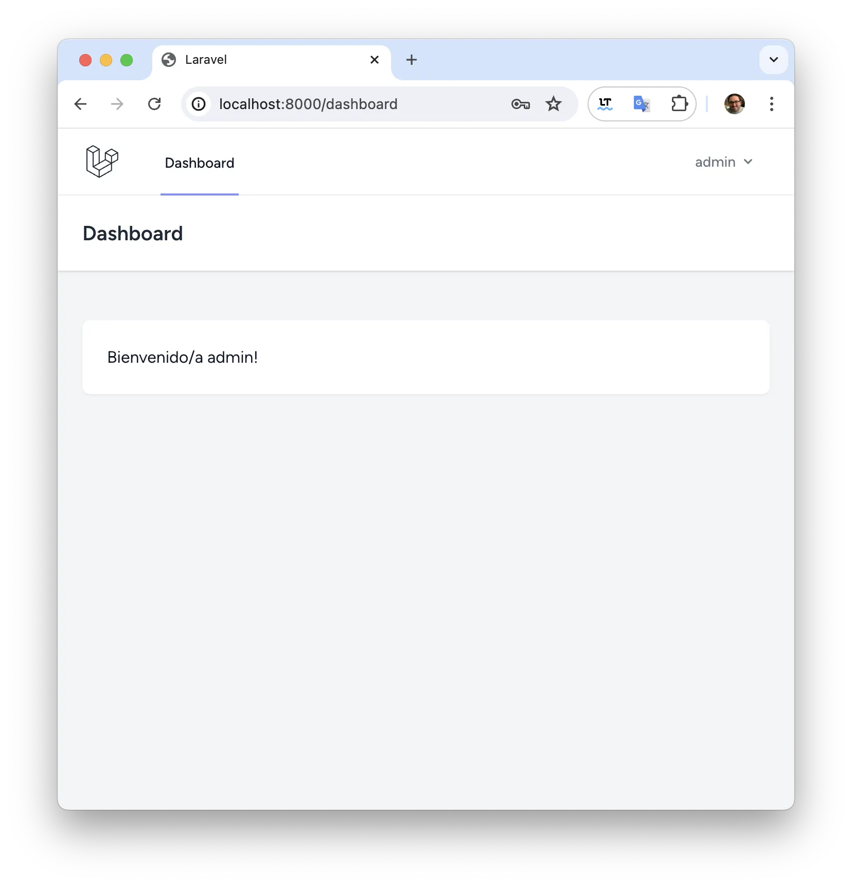
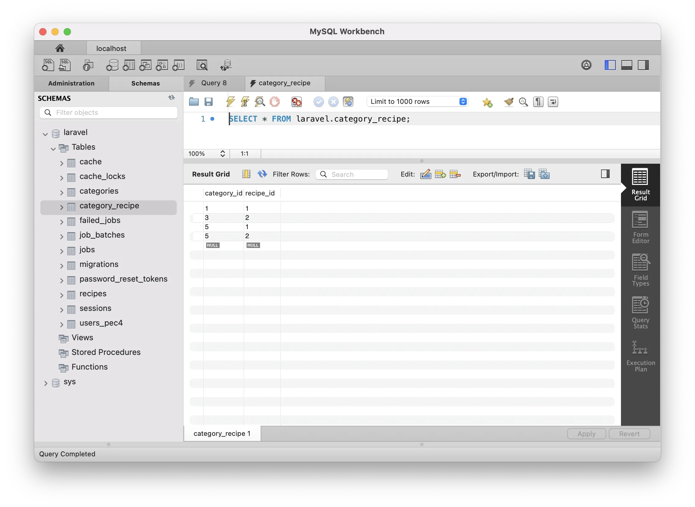
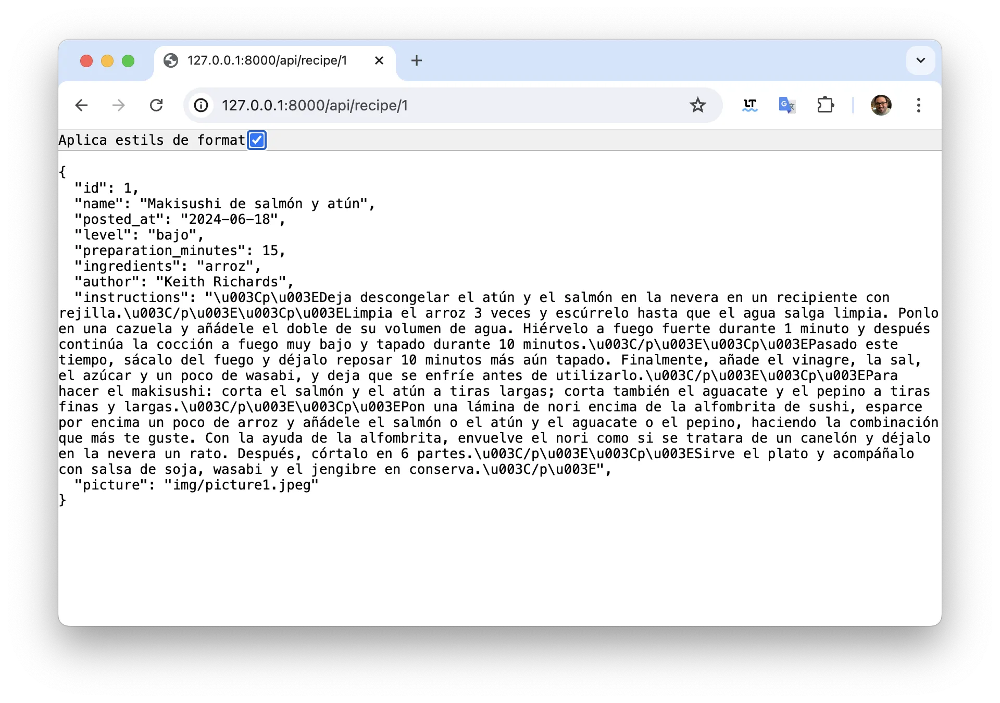

PEC 4 - Desarrollo back-end con PHP
Robert Buj Gelonch, rbuj@uoc.edu
Índice
1. Instalación de Laravel en macOS Sonoma
2.2. Autenticación con nombre de usuario y contraseña
2.4. Registrar un usuario nuevo
3. Migraciones, modelos e introducción de datos (Tinker)
3.1. Migración y modelo para las recetas
3.2. Migración y modelo para las categorías
3.3. Relación N:M entre categorías y recetas
3.4. Realizar la migración a la base de datos
3.5. Introducción de datos mediante Tinker
5.1. Mostrar una receta mediante su identificador
5.2. Mostrar 5 recetas en la página principal
Para instalar Laravel se necesita composer y este a su vez php.
Se instala la versión 8.3 de php mediante MacPorts:
sudo port -qsc install php83 php83-openssl php83-curl php83-iconv php83-sqlite php83-mysql php83-xdebug php_select
Se selecciona la versión 8.3 de php como la versión predeterminada:
sudo port select --set php php83
Se establece la configuración de desarrollo de php:
cd /opt/local/etc/php83 sudo cp php.ini-development php.ini
Se instala composer en la carpeta bin del usuario:
mkdir -p ~/bin
php -r "copy('https://getcomposer.org/installer', 'composer-setup.php');"
php -r "if (hash_file('sha384', 'composer-setup.php') === 'dac665fdc30fdd8ec78b38b9800061b4150413ff2e3b6f88543c636f7cd84f6db9189d43a81e5503cda447da73c7e5b6') { echo 'Installer verified'; } else { echo 'Installer corrupt'; unlink('composer-setup.php'); } echo PHP_EOL;"
php composer-setup.php
php -r "unlink('composer-setup.php');"
mv composer.phar ~/bin/composer
Se crea el proyecto pec4 de laravel en la carpeta M4.255 del usuario:
mkdir -p ~/M4.255 cd ~/M4.255 ~/bin/composer create-project laravel/laravel pec4
Acceder a la carpeta del proyecto:
cd ~/M4.255/pec4
Cambiar SGBD a MySQL:
sed -i '' "s/DB_CONNECTION=sqlite/DB_CONNECTION=mysql/" .env
Cambiar datos de autentificación para la conexión a MySQL:
sed -i '' "s/^# DB_HOST=127.0.0.1/DB_HOST=127.0.0.1/" .env sed -i '' "s/^# DB_PORT=3306/DB_PORT=3306/" .env sed -i '' "s/^# DB_DATABASE=laravel/DB_DATABASE=laravel/" .env sed -i '' "s/^# DB_USERNAME=root/DB_USERNAME=root/" .env sed -i '' "s/^# DB_PASSWORD=/DB_PASSWORD=password/" .env
Cambiar el nombre de la tabla users a users_pec4:
mv database/migrations/0001_01_01_000000_create_users_table.php \ database/migrations/0001_01_01_000000_create_users_pec4_table.php sed -i '' "s/'users'/'users_pec4'/g" database/migrations/0001_01_01_000000_create_users_pec4_table.php
Cambiar el nombre de la tabla en la vista User.
sed -i '' '/use HasFactory, Notifiable;/a\
protected $table = '"'"'users_pec4'"'"';' app/Models/User.php
Migrar base de datos:
php artisan migrate WARN The database 'laravel' does not exist on the 'mysql' connection. ┌ Would you like to create it? ────────────────────────────────┐ │ Yes │ └──────────────────────────────────────────────────────────────┘
En caso de producirse un error de autenticación: El complemento predeterminado de MySQL 8 es auth_socket. y la mayoría de las aplicaciones esperarán iniciar sesión utilizando una contraseña.
...
SQLSTATE[HY000] [2054] The server requested authentication method unknown to the client [caching_sha2_password] (Connection: mysql, SQL: select table_name as `name`, (data_length + index_length) as `size`, table_comment as `comment`, engine as `engine`, table_collation as `collation` from information_schema.tables where table_schema = 'laravel' and table_type in ('BASE TABLE', 'SYSTEM VERSIONED') order by table_name)
...
Tan solo se tiene que ejecutar la siguiente consulta mediante MySQL WorkBench:
ALTER USER 'root'@'localhost' IDENTIFIED WITH mysql_native_password BY 'password';
Eliminar base de datos sqlite:
rm -f database/database.sqlite
Iniciar la aplicación:
php artisan serve
Abrir el sitio web http://127.0.0.1:8000 con el navegador:
En ambos casos se utiliza Composer para la instalación, pero en Drupal después de la instalación mediante Composer se finaliza la instalación en el navegador introduciendo los parámetros de la configuración del sitio web, en Laravel la configuración se realiza en el archivo .env.
Acceder a la carpeta del proyecto:
cd ~/M4.255/pec4
Instalar Lavarel Breeze mediante Composer:
~/bin/composer require laravel/breeze --dev
Instalación de la pila de Breeze:
php artisan breeze:install ┌ Which Breeze stack would you like to install? ───────────────┐ │ Blade with Alpine │ └──────────────────────────────────────────────────────────────┘ ┌ Would you like dark mode support? ───────────────────────────┐ │ No │ └──────────────────────────────────────────────────────────────┘ ┌ Which testing framework do you prefer? ──────────────────────┐ │ PHPUnit │ └──────────────────────────────────────────────────────────────┘
El menú de autenticación se ha añadido a la página principal.
En la migración de la tabla users_pec4, se añade la columna username como valor único, y se modifican las columnas email y name para que puedan almacenar valores nulos.
diff --git a/database/migrations/0001_01_01_000000_create_users_pec4_table.php b/database/migrations/0001_01_01_000000_create_users_pec4_table.php
index ca220e2..bc61572 100644
--- a/database/migrations/0001_01_01_000000_create_users_pec4_table.php
+++ b/database/migrations/0001_01_01_000000_create_users_pec4_table.php
@@ -13,10 +13,11 @@ public function up(): void
{
Schema::create('users_pec4', function (Blueprint $table) {
$table->id();
- $table->string('name');
- $table->string('email')->unique();
- $table->timestamp('email_verified_at')->nullable();
+ $table->string('username')->unique();
$table->string('password');
+ $table->string('name')->nullable();
+ $table->string('email')->nullable();
+ $table->timestamp('email_verified_at')->nullable();
$table->rememberToken();
$table->timestamps();
});
Se añade username al modelo:
diff --git a/app/Models/User.php b/app/Models/User.php
index 75d527f..dfbd83c 100644
--- a/app/Models/User.php
+++ b/app/Models/User.php
@@ -17,9 +17,10 @@ class User extends Authenticatable
* @var array<int, string>
*/
protected $fillable = [
+ 'username',
+ 'password',
'name',
'email',
- 'password',
];
/**
En el formulario de registro se añade el campo username y se eliminan los campos name y email.
diff --git a/resources/views/auth/register.blade.php b/resources/views/auth/register.blade.php
index a857242..40b288f 100644
--- a/resources/views/auth/register.blade.php
+++ b/resources/views/auth/register.blade.php
@@ -2,18 +2,11 @@
<form method="POST" action="{{ route('register') }}">
@csrf
- <!-- Name -->
- <div>
- <x-input-label for="name" :value="__('Name')" />
- <x-text-input id="name" class="block mt-1 w-full" type="text" name="name" :value="old('name')" required autofocus autocomplete="name" />
- <x-input-error :messages="$errors->get('name')" class="mt-2" />
- </div>
-
- <!-- Email Address -->
+ <!-- Username -->
<div class="mt-4">
- <x-input-label for="email" :value="__('Email')" />
- <x-text-input id="email" class="block mt-1 w-full" type="email" name="email" :value="old('email')" required autocomplete="username" />
- <x-input-error :messages="$errors->get('email')" class="mt-2" />
+ <x-input-label for="username" :value="__('Username')" />
+ <x-text-input id="username" class="block mt-1 w-full" type="text" name="username" :value="old('username')" required autocomplete="username" />
+ <x-input-error :messages="$errors->get('username')" class="mt-2" />
</div>
<!-- Password -->
En el controlador Auth/RegisteredUserController se eliminan name y email de la validación de la petición, y se añade username. En la creación del usuario se sustituye email por username.
diff --git a/app/Http/Controllers/Auth/RegisteredUserController.php b/app/Http/Controllers/Auth/RegisteredUserController.php
index 0739e2e..9148525 100644
--- a/app/Http/Controllers/Auth/RegisteredUserController.php
+++ b/app/Http/Controllers/Auth/RegisteredUserController.php
@@ -30,14 +30,12 @@ public function create(): View
public function store(Request $request): RedirectResponse
{
$request->validate([
- 'name' => ['required', 'string', 'max:255'],
- 'email' => ['required', 'string', 'lowercase', 'email', 'max:255', 'unique:'.User::class],
+ 'username' => ['required', 'string', 'lowercase', 'max:255', 'unique:'.User::class],
'password' => ['required', 'confirmed', Rules\Password::defaults()],
]);
$user = User::create([
- 'name' => $request->name,
- 'email' => $request->email,
+ 'username' => $request->username,
'password' => Hash::make($request->password),
]);
En el formulario de autenticación se sustituye email por username:
diff --git a/resources/views/auth/login.blade.php b/resources/views/auth/login.blade.php
index 78b684f..0938936 100644
--- a/resources/views/auth/login.blade.php
+++ b/resources/views/auth/login.blade.php
@@ -5,11 +5,11 @@
<form method="POST" action="{{ route('login') }}">
@csrf
- <!-- Email Address -->
+ <!-- Username -->
<div>
- <x-input-label for="email" :value="__('Email')" />
- <x-text-input id="email" class="block mt-1 w-full" type="email" name="email" :value="old('email')" required autofocus autocomplete="username" />
- <x-input-error :messages="$errors->get('email')" class="mt-2" />
+ <x-input-label for="username" :value="__('Username')" />
+ <x-text-input id="username" class="block mt-1 w-full" type="text" name="username" :value="old('username')" required autofocus autocomplete="username" />
+ <x-input-error :messages="$errors->get('username')" class="mt-2" />
</div>
<!-- Password -->
En la autenticación se utiliza username en lugar de email.
diff --git a/app/Http/Requests/Auth/LoginRequest.php b/app/Http/Requests/Auth/LoginRequest.php
index 2b92f65..3fc3d9d 100644
--- a/app/Http/Requests/Auth/LoginRequest.php
+++ b/app/Http/Requests/Auth/LoginRequest.php
@@ -27,7 +27,7 @@ public function authorize(): bool
public function rules(): array
{
return [
- 'email' => ['required', 'string', 'email'],
+ 'username' => ['required', 'string'],
'password' => ['required', 'string'],
];
}
@@ -41,11 +41,11 @@ public function authenticate(): void
{
$this->ensureIsNotRateLimited();
- if (! Auth::attempt($this->only('email', 'password'), $this->boolean('remember'))) {
+ if (! Auth::attempt($this->only('username', 'password'), $this->boolean('remember'))) {
RateLimiter::hit($this->throttleKey());
throw ValidationException::withMessages([
- 'email' => trans('auth.failed'),
+ 'username' => trans('auth.failed'),
]);
}
@@ -80,6 +80,6 @@ public function ensureIsNotRateLimited(): void
*/
public function throttleKey(): string
{
- return Str::transliterate(Str::lower($this->string('email')).'|'.$this->ip());
+ return Str::transliterate(Str::lower($this->string('username')).'|'.$this->ip());
}
}
Una vez se inicia la sesión se muestra el mensaje de bienvenida en el tablero.
diff --git a/resources/views/dashboard.blade.php b/resources/views/dashboard.blade.php
index 66028f2..1797afd 100644
--- a/resources/views/dashboard.blade.php
+++ b/resources/views/dashboard.blade.php
@@ -9,7 +9,7 @@
<div class="max-w-7xl mx-auto sm:px-6 lg:px-8">
<div class="bg-white overflow-hidden shadow-sm sm:rounded-lg">
<div class="p-6 text-gray-900">
- {{ __("You're logged in!") }}
+ Bienvenido/a {{ Auth::user()->username }}!
</div>
</div>
</div>
En el menú desplegable se muestra username en lugar de name:
diff --git a/resources/views/layouts/navigation.blade.php b/resources/views/layouts/navigation.blade.php
index c2d3a65..cbf7e8f 100644
--- a/resources/views/layouts/navigation.blade.php
+++ b/resources/views/layouts/navigation.blade.php
@@ -23,7 +23,7 @@
<x-dropdown align="right" width="48">
<x-slot name="trigger">
<button class="inline-flex items-center px-3 py-2 border border-transparent text-sm leading-4 font-medium rounded-md text-gray-500 bg-white hover:text-gray-700 focus:outline-none transition ease-in-out duration-150">
- <div>{{ Auth::user()->name }}</div>
+ <div>{{ Auth::user()->username }}</div>
<div class="ms-1">
<svg class="fill-current h-4 w-4" xmlns="http://www.w3.org/2000/svg" viewBox="0 0 20 20">
Se crean de nuevo de cero las tablas:
php artisan migrate:fresh
Nombre de usuario: admin
Contraseña: @dmin_2024

Crear el modelo Recipe con la migración
php artisan make:model Recipe -m INFO Model [app/Models/Recipe.php] created successfully. INFO Migration [database/migrations/2024_06_18_081823_create_recipes_table.php] created successfully.
Añadir las columnas a la migración:
database/migrations/2024_06_18_081823_create_recipes_table.php
Schema::create('recipes', function (Blueprint $table) {
$table->id();
$table->string('name', 255);
$table->date('posted_at');
$table->enum('level', array('bajo', 'medio', 'alto'));
$table->smallInteger('preparation_minutes');
$table->string('ingredients');
$table->string('author');
$table->longText('instructions');
$table->string('picture');
});
En el modelo, se añade la propiedad fillable para introducir datos de forma masiva:
app/Models/Recipe.php
protected $fillable = [
'name',
'posted_at',
'level',
'preparation_minutes',
'ingredients',
'author',
'instructions',
'picture'
];
y se establece la propiedad $timestamps a false porque no se utilizan las columnas created_at ni updated_at:
public $timestamps = false;
Crear el modelo Category con la migración
php artisan make:model Category -m INFO Model [app/Models/Category.php] created successfully. INFO Migration [database/migrations/2024_06_18_082229_create_categories_table.php] created successfully.
Añadir las columnas a la migración:
database/migrations/2024_06_18_082229_create_categories_table.php
Schema::create('category', function (Blueprint $table) {
$table->id();
$table->string('name');
});
La tabla category no contiene los timestamps: created_at ni updated_at, en el modelo establecemos la propiedad $timestamps a false:
app/Models/Category.php
public $timestamps = false;
Crear la migración de la “pivot table” category_recipe
php artisan make:migration create_category_recipe_table --create=category_recipe
Añadir las columnas a la migración:
database/migrations/2024_06_18_083123_create_category_recipe_table.php
Schema::create('recipe_category', function (Blueprint $table) {
$table->id();
$table->unsignedBigInteger('recipe_id');
$table->unsignedBigInteger('category_id');
$table->foreign('recipe_id')->references('id')->on('recipes');
$table->foreign('category_id')->references('id')->on('categories');
});
Modificar el modelo Recipe
app/Models/Recipe.php
public function categories()
{
return $this->belongsToMany(Category::class);
}
Modificar el modelo Category
app/Models/Category.php
public function recipes()
{
return $this->belongsToMany(Recipe::class);
}
Realizar la migración:
php artisan migrate
Iniciar Tinker:
php artisan tinker
Utilizar el modelo Category
use App\Models\Category;
Crear y almacenar las categorías japonesa, italiana, catalana, vegana y tradicional:
$c = new Category(); $c->name = 'japonesa'; $c->save(); $c = new Category(); $c->name = 'italiana'; $c->save(); $c = new Category(); $c->name = 'catalana'; $c->save(); $c = new Category(); $c->name = 'vegana'; $c->save(); $c = new Category(); $c->name = 'tradicional'; $c->save();
Utilizar el modelo Recipe
use App\Models\Recipe;
Crear la receta 1: Makisushi de salmón y atún
$recipe = Recipe::create([ 'name' => 'Makisushi de salmón y atún', 'posted_at' => '2024-06-18 08:52:47', 'level' => 'bajo', 'preparation_minutes' => 15, 'ingredients' => 'arroz', 'author' => 'Keith Richards', 'instructions' => '<p>Deja descongelar el atún y el salmón en la nevera en un recipiente con rejilla.</p><p>Limpia el arroz 3 veces y escúrrelo hasta que el agua salga limpia. Ponlo en una cazuela y añádele el doble de su volumen de agua. Hiérvelo a fuego fuerte durante 1 minuto y después continúa la cocción a fuego muy bajo y tapado durante 10 minutos.</p><p>Pasado este tiempo, sácalo del fuego y déjalo reposar 10 minutos más aún tapado. Finalmente, añade el vinagre, la sal, el azúcar y un poco de wasabi, y deja que se enfríe antes de utilizarlo.</p><p>Para hacer el makisushi: corta el salmón y el atún a tiras largas; corta también el aguacate y el pepino a tiras finas y largas.</p><p>Pon una lámina de nori encima de la alfombrita de sushi, esparce por encima un poco de arroz y añádele el salmón o el atún y el aguacate o el pepino, haciendo la combinación que más te guste. Con la ayuda de la alfombrita, envuelve el nori como si se tratara de un canelón y déjalo en la nevera un rato. Después, córtalo en 6 partes.</p><p>Sirve el plato y acompáñalo con salsa de soja, wasabi y el jengibre en conserva.</p>', 'picture' => 'img/picture1.jpeg' ]);
Añadir las categorías (japonesa : 1, tradicional : 5) a la receta
$recipe->categories()->attach([1, 5]);
Crear la receta 2: Fideuá de calamares en romesco
$recipe = Recipe::create([ 'name' => 'Fideuá de calamares en romesco', 'posted_at' => '2024-06-19 08:52:47', 'level' => 'medio', 'preparation_minutes' => 60, 'ingredients' => 'fideos', 'author' => 'Mick Jagger', 'instructions' => '<p>Calienta tu horno a 200-220ºC. Mientras tanto calienta una paellera o sartén apta para horno a fuego fuerte. Saltea el CALAMAR PATAGÓNICO LIMPIO TROCEADO con un chorrito de aceite de oliva y dóralos 1 minuto. Reserva.</p><p>En la misma sartén, a fuego fuerte, añade el PISTO DE VERDURAS directamente congelado con un chorrito de aceite de oliva (sal no). Saltea a fuego fuerte 2-3 minutos y añade el sofrito. Baja el fuego y deja reducir hasta evaporar toda el agua.</p><p>Aún a fuego bajo, añade los fideos y dóralos. Añade un par de cucharadas más de aceite de oliva (2 minutos). Mientras tanto, mezcla el sobre de FUMET CONCENTRADO DE PESCADO DE ROCA con 1 vaso de agua (250 ml.) y llévalo a ebullición.</p><p>Añade de nuevo el CALAMAR PATAGÓNICO TROCEADO a la paellera y sube el fuego de nuevo. Moja con el FUMET DE PESCADO, reparte bien y lleva al horno (6-8 minutos) hasta que se haya consumido todo el caldo. Retira, deja reposar 1 minuto y sirve con una cucharada de salsa romesco.</p>', 'picture' => 'img/picture2.jpeg' ]);
Añadir categorías (catalana : 3, tradicional : 5) a la receta
$recipe->categories()->attach([3, 5]);

Generar el seeder y el factory:
php artisan make:seeder RecipeSeeder php artisan make:factory RecipeFactory
Añadir la definición a RecipeFactory:
database/factories/RecipeFactory.php
public function definition(): array
{
return [
'name' => rtrim(fake()->sentence(rand(3, 8)), '.'),
'posted_at' => fake()->dateTimeBetween($startDate = '-6 months', $endDate = 'now')->format('Y-m-d H:i:s'),
'level' => fake()->randomElement(['bajo', 'medio', 'alto']),
'preparation_minutes' => fake()->numberBetween(5, 120),
'ingredients' => fake()->word(),
'author' => fake()->name,
'instructions' => implode('<br>', fake()->paragraphs(rand(2, 6))),
'picture' => fake()->imageUrl(640, 480, 'receta')
];
}
Crear 100 recetas en RecipeSeeder:
database/seeders/RecipeSeeder.php
public function run(): void
{
$numCategories = 2;
// create 100 randon recipes
$recipes = Recipe::factory(100)
->create();
// associate each generated recipes with 2 categories
foreach ($recipes as $recipe) {
$categories = Category::inRandomOrder()->limit($numCategories)->pluck('id');
$recipe->categories()->attach($categories);
}
}
Ejecutar RecipeSeeder
php artisan db:seed --class=RecipeSeeder
Modificar el archivo de enrutamiento
routes/web.php
Route::get('/recipe/{id}', [RecipeController::class, 'show']);
Crear el controlador RecipeController:
php artisan make:controller RecipeController
Añadir el siguiente código al controlador
app/Http/Controllers/RecipeController.php
/**
* Show the recipe for a given id.
*/
public function show(string $id): View
{
return view('recipe.content', [
'recipe' => Recipe::findOrFail($id)
]);
}
Crear la vista recipe.content
php artisan make:view recipe.content
Mostrar las columnas en la vista recipe.content
resources/views/recipe/content.blade.php
{{ $recipe['name'] }}
{{ \Carbon\Carbon::parse($recipe['posted_at'])->format('d/m/Y') }}
{{ $recipe['level'] }}
{{ $recipe['preparation_minutes'] }}
{{ $recipe['ingredients'] }}
{{ $recipe['author'] }}
<img src="{{ Str::startsWith($recipe['picture'], 'http') ? $recipe['picture'] : asset($recipe['picture']) }}" alt="">
{!! $recipe['instructions'] !!}
Ruta:
routes/web.php
Route::get('/', [RecipeController::class, 'index'])->name('home');
Añadir el método index al controlador:
app/Http/Controllers/RecipeController.php
/**
* Show 5 recipes: 2 fixed + 3 random
*/
public function index(): View
{
$fixed = [1, 2];
$random = Recipe::select('id')->where('id', '>', 2)->orderByRaw('RAND()')->take(3)->pluck('id')->toArray();
$array = array_merge($fixed, $random);
return view('home', [
'recipes' => Recipe::find($array)
]);
}
Modificar la vista para mostrar las recetas:
resources/views/home.blade.php
@foreach ($recipes as $recipe)
<a href="{{ asset('recipe/'.$recipe['id']) }}" class="group">
<img src="{{ Str::startsWith($recipe['picture'], 'http') ? $recipe['picture'] : asset($recipe['picture']) }}">
<h3>{{ $recipe['name'] }}</h3>
<p>Categorías: {{ $recipe->categories()->orderBy('name')->pluck('name')->implode(', ') }}</p>
<p>Nivel de dificultad: {{ $recipe['level'] }}</p>
<p>Fecha de publicación: {{ \Carbon\Carbon::parse($recipe['posted_at'])->format('d/m/Y') }} </p>
</a>
@endforeach
Enrutamiento:
routes/web.php
Route::get('/api/recipe/{id}', [RecipeController::class, 'apiRecipe']);
Controlador:
app/Http/Controllers/RecipeController.php
public function apiRecipe(string $id)
{
$recipe = Recipe::find($id);
return response()->json($recipe, !empty($recipe) ? 200 : 400);
}

Enrutamiento:
routes/web.php
Route::get('/api/recipes/{page}', [RecipeController::class, 'apiRecipes']);
Controlador:
app/Http/Controllers/RecipeController.php
public function apiRecipes(string $page)
{
$recipes = Recipe::paginate($perPage = 10, $columns = ['id','name', 'posted_at'], $pageName = 'page', $page);
if (!empty($recipes)) {
$data = $recipes->toArray()['data'];
return response()->json($data, 200);
}
return response()->json([], 400);
}
Enrutamiento:
routes/web.php
Route::get('/api/category/{id}/{page}', [RecipeController::class, 'apiCategory']);
Controlador:
app/Http/Controllers/RecipeController.php
public function apiCategory(string $id, string $page)
{
$recipes = Recipe::whereHas('categories', fn ($query) => $query->where('category_id', $id))->paginate($perPage = 10, $columns = ['id', 'name', 'posted_at'], $pageName = 'page', $page);
if (!empty($recipes)) {
$data = $recipes->toArray()['data'];
return response()->json($data, 200);
}
return response()->json([], 400);
}
Se exporta la base de datos mediante MySQL Workbench:
Se importa la base de datos mediante la página de phpMyAdmin:
Construcción de node.js
npm run build
Se comprime el directorio de la práctica:
zip pec4.zip -r pec4
Se envía el archivo pec4.zip al servidor:
scp -P 55000 pec4.zip rbuj@eimtcms2.uoclabs.uoc.es:./public_html/
Se inicia sesión al servidor
ssh -p 55000 rbuj@eimtcms2.uoclabs.uoc.es
Se descomprime el archivo en el servidor:
cd ~/public_html unzip pec4.zip
Se modifican los permisos de los directorios storage y bootstrap/cache
chmod -R 777 ~/public_html/pec4/storage chmod -R 777 ~/public_html/pec4/bootstrap/cache
Se modifica el archivo ~/public_html/pec4/.env con los siguientes valores:
DB_CONNECTION=mysql DB_HOST=127.0.0.1 DB_PORT=3306 DB_DATABASE=rbuj DB_USERNAME=rbuj DB_PASSWORD=sSjDnndR
Limpiar y precompilar las vistas:
cd ~/public_html/pec4 php artisan view:clear php artisan view:cache
|
Desventajas |
Ventajas |
|
La curva de aprendizaje es más pronunciada que en otros entornos. |
Panel de administración amplio, completo y bien estructurado. |
|
Ampliable mediante plugins, pero su número es limitado. |
Gestión transparente de la base de datos. |
|
Estructura de archivos más compleja que en los otros entornos. |
Herramienta auxiliar dush para la gestión a través de la línea de comandos. |
|
Desventajas |
Ventajas |
|
Se tienen que desarrollar todos los componentes de la aplicación. |
Control total de la base de datos. |
|
Se tienen que gestionar los accesos a la base de datos. |
Fácil de depurar. |
|
La estructura de la aplicación recae en las manos del desarrollador. |
Estructura de aplicación sencilla, con tan solo el código de la aplicación. |
|
Desventajas |
Ventajas |
|
Se utiliza la estructura de archivos para la definición de vistas, modelos, migraciones, ... y estos están atados entre sí. |
La migración de datos permite integrar cambios a la base de datos de forma gradual. |
|
Hay que aprender la sintaxis para definir modelos, realizar consultas, ... |
Permite desarrollar componentes reutilizables. |
|
Las consultas de tablas relacionadas es más compleja, ya que implica la definición de las relaciones en los modelos. |
Definición de las rutas en un archivo. |